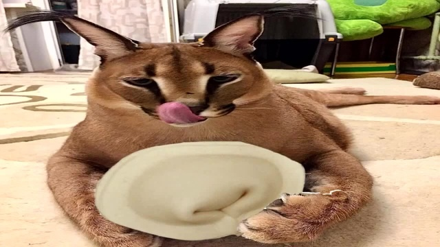

Плотный Обед

самый плотный
Телятина со свининой. Думаю, многие и забыли Как это может быть
вкусно. Хорошие пельмени, это очень, очень вкусно На самом деле рецепт
простой Много мяса, мало теста. Хорошие пельмени, это очень, очень
вкусно На самом деле рецепт простой Много мяса, мало теста. Сперва
выкладываем великолепный Рубленый фарш. Лук сладких сортов Для
образования бульончика С добавлением сливочного масла. Готовим тонкое
яичное тесто И перец — совсем немного Много мяса, мало теста. Вот он —
настоящий пельмень Внутри много, много мяса, мало теста. Вот он —
настоящий пельмень Внутри много, много мяса, мало теста.